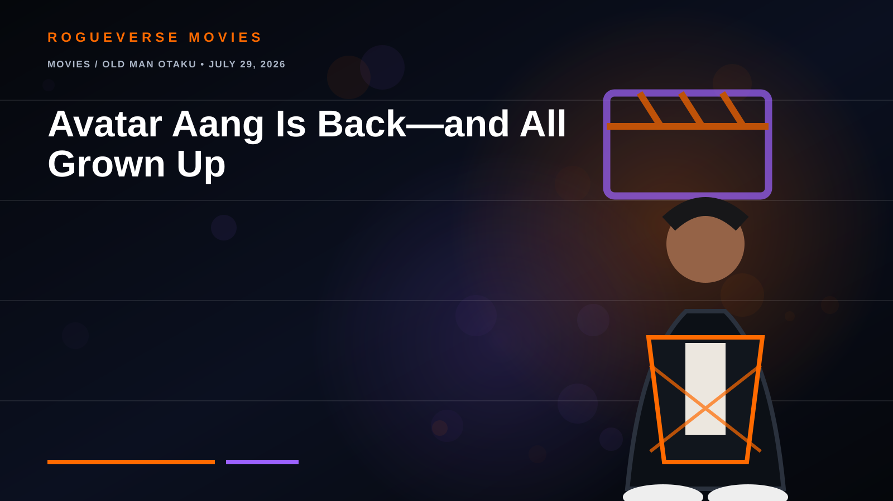

MOVIES / OLD MAN OTAKU • JULY 29, 2026
Avatar Aang Is Back—and All Grown Up
The first Avatar Studios feature reunites Team Avatar for a story about rebuilding a culture.

Avatar Aang: The Last Airbender is now streaming on Paramount+. Set years after Ozai’s defeat, the film follows an adult Aang as he learns of an ancient power that may help save Air Nomad culture.
Eric Nam voices Aang, with Jessica Matten as Katara, Román Zaragoza as Sokka, Dionne Quan as Toph, Steven Yeun as Zuko and Dave Bautista among the cast.
Why it matters
The real question is bigger than nostalgia: how does the last Airbender preserve a people without freezing their culture in the past? That makes this the missing bridge between the original series and The Legend of Korra.
Status: now streaming; Paramount+ lists the film at 1 hour 38 minutes.
← RogueVerse Movies